Что делает каждая кнопка¶
Панель вызывается сочетанием Ctrl+Shift+M прямо во вьюпорте — она всплывает под курсором. Сочетание меняется в настройках аддона, там же включается вкладка Modular в боковой панели, если попап неудобен. Порядок разделов здесь тот же, что в панели сверху вниз.
Пресеты проекта¶
Настройки аддона живут в сцене, а пресет переносит их между файлами и художниками. Строка с меню пресетов стоит в самом верху панели.
Меню пресетов¶
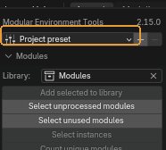
Список пресетов проекта и действия с ними.
Когда пригодится. Когда на проекте договорились о префиксах, единицах и папке выгрузки, и это должно быть одинаковым у всех.
Что получится. Пресеты — обычные JSON-файлы в папке, которая задаётся в настройках аддона. Направьте её на сетевую шару или в папку проекта, и весь проект увидит одни и те же пресеты. Кнопка меню показывает, из какого пресета настроена эта сцена.
Обратите внимание
Внизу меню — Import from file и Send to file. Общая папка удобнее, но файл работает всегда: импорт кладёт присланный пресет в папку и сразу применяет, поэтому в следующий раз он уже будет в списке. Пресет, записанный другой версией аддона, применяется в той части, которая понятна, а не отвергается целиком.
Сохранить пресет¶

Записывает текущие настройки проекта в папку пресетов.
Когда пригодится. Настроили сцену под проект — сохраните, чтобы остальные загрузили то же самое.
Удалить пресет¶

Убирает загруженный пресет из папки.
Обратите внимание
Удаляется файл в общей папке, а не только у вас: если папка сетевая, пресет исчезнет у всего проекта.
Library — библиотека модулей¶
Коллекция уникальных мешей. Всё остальное в сцене — инстансы, то есть объекты, построенные на тех же данных.
Library¶

Коллекция, в которой лежат уникальные модули.
Когда пригодится. Укажите ту, что уже заведена на проекте. Пустое поле означает «искать Modules».
По умолчанию: коллекция с именем Modules, если она есть
Обратите внимание
От этого поля зависят почти все инструменты раздела: они считают модулем то, что лежит здесь.
Add selected to library¶
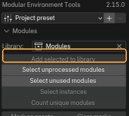
Линкует выделенные меши в библиотеку модулей.
Когда пригодится. Когда новый модуль готов и должен стать частью набора.
Обратите внимание
Это единственная кнопка, которой разрешено создавать коллекцию библиотеки. Остальные инструменты, не найдя её, честно об этом сообщают, а не заводят молча.
Select unprocessed modules¶
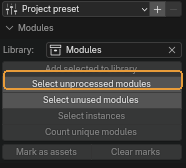
Выделяет видимые меши, чьи данные не входят в библиотеку.
Когда пригодится. Проверка «что ещё не занесено». После неё видно, какие объекты сцены живут сами по себе.
Select unused modules¶
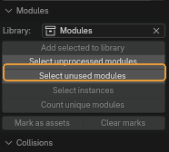
Выделяет модули библиотеки, которыми в сцене никто не пользуется.
Когда пригодится. Перед сдачей набора: такой модуль либо забыли поставить, либо он лишний.
Select instances¶

Выделяет все объекты сцены, построенные на тех же мешах, что и выделенные.
Когда пригодится. Чтобы понять, сколько раз модуль стоит в сцене, и найти все его копии разом — например, перед правкой.
Count unique modules¶

Считает, сколько уникальных мешей делят выделенные объекты.
Когда пригодится. Быстрый ответ на вопрос «из скольких разных модулей собран этот кусок уровня». Ничего не меняет.
Mark as assets / Clear marks¶

Помечает выделенные модули как ассеты и рисует им превью — после этого их можно перетаскивать из Asset Browser. Вторая кнопка метку снимает.
Когда пригодится. Когда набор дошёл до состояния, в котором им пользуются другие: из браузера ассетов модуль ставится перетаскиванием, без открытия исходного файла.
Collisions — коллизии¶
Черновые коллизии в конвенции движка: выпуклые оболочки с префиксом UCX и коробки с UBX.
Make collision draft¶

Делает из каждого выделенного меша черновую коллизию, названную и пронумерованную так, как ждёт движок.
Когда пригодится. Первый шаг по коллизиям: получить оболочку, которую дальше правят руками.
Что получится. Копия параентится к оригиналу, получает материал коллизии и стек модификаторов — выпуклые оболочки по островам, упрощение и поджатие внутрь. Стек остаётся живым, если не включено Apply modifiers.
Rebuild collisions¶

Пересобирает выделенные коллизии из их источников.
Когда пригодится. После правки модуля. Без выделения пересобирает все устаревшие коллизии сцены — это и есть обычный способ.
Sync collision names¶
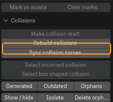
Переименовывает коллизии по модулю, к которому они привязаны, с нумерацией по порядку.
Когда пригодится. Сразу после переименования модулей. Движок связывает коллизию с мешем по имени, поэтому рассинхрон здесь стоит дорого.
Select incorrect collision¶
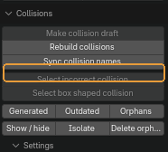
Ищет среди выделенного острова коллизий, которые не замкнуты или вырождены в плоскость.
Когда пригодится. Перед выгрузкой. Такая оболочка в движке ведёт себя непредсказуемо.
Что получится. Оставляет сцену в режиме редактирования с подсвеченными проблемными вершинами.
Select box shaped collision¶

Выделяет коллизии, которые на деле — обычные коробки по осям.
Когда пригодится. Чтобы переименовать их из префикса выпуклой оболочки в префикс коробки: движку коробка обходится дешевле.
Generated / Outdated / Orphans¶

Три набора выделения: всё, что аддон сгенерировал; коллизии, чей исходный меш правили после генерации; коллизии, чей исходник из файла исчез.
Когда пригодится. Outdated — главный: он отвечает на вопрос «что пересобрать». Orphans показывает мусор, оставшийся от удалённых модулей.
Show / hide, Isolate, Delete orphans¶
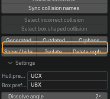
Скрыть или показать все коллизии сцены; спрятать всё, кроме них; удалить осиротевшие.
Когда пригодится. Isolate — когда оболочки надо разглядеть отдельно от геометрии; повторное нажатие возвращает сцену.
Обратите внимание
Delete orphans удаляет объекты безвозвратно. Сначала посмотрите на них кнопкой Orphans.
Collision prefix и Box prefix¶

Префиксы имён для выпуклой оболочки и для коробки.
Когда пригодится. Значения по умолчанию — конвенция Unreal. Меняйте, если движок на проекте ждёт другое.
По умолчанию: UCX и UBX
Форма оболочки¶

Предел упрощения плоских участков, поджатие оболочки внутрь меша и выбор «запечь стек или оставить живым».
Когда пригодится. Displace strength отрицательный: оболочка утапливается внутрь, чтобы не торчала сквозь геометрию.
Обратите внимание
Пока Apply modifiers выключен, стек остаётся живым, и коллизию можно пересобрать. Включите его, только когда форма окончательная.
Материал коллизий¶

Имя материала, его цвет во вьюпорте и показ оболочек сеткой.
Когда пригодится. Цвет меняется на лету и перекрашивает уже созданные коллизии. Сетка — то, как их рисует движок; выключите, чтобы смотреть залитыми.
Naming — размеры и префиксы в именах¶
Оси и порядок¶

Какие габариты попадут в имя и в каком порядке.
По умолчанию: X и Z включены, порядок XZY
Обратите внимание
Порядок имеет смысл только при двух и более включённых осях. По умолчанию он XZY, а не XYZ: в модульных наборах ширина и высота важнее глубины.
Единицы и округление¶
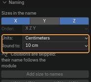
В чём писать размер и до какого шага округлять.
Когда пригодится. Шаг округления — именно шаг, а не число знаков: при 10 размеры лягут на десятки сантиметров, что и нужно модульной сетке.
По умолчанию: сантиметры, шаг 10
Add size to names¶

Дописывает габариты выделенных мешей в их имена.
Когда пригодится. Когда набор собран и по имени должно быть видно, какой модуль какого размера.
Обратите внимание
Повторный запуск заменяет размеры, а не дописывает ещё раз, — можно править геометрию и прогонять снова.
UCX to UBX и UBX to UCX¶
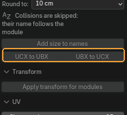
Меняет префикс коллизии у выделенных объектов в одну и в другую сторону.
Когда пригодится. В паре с Select box shaped collision: сначала найти коробки, потом перевести их в префикс коробок.
Transform¶
Apply transform for modules¶
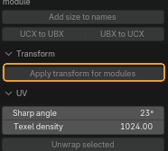
Применяет поворот и масштаб к выделенным объектам и ко всем инстансам, которые делят с ними меш.
Когда пригодится. Перед выгрузкой: движок ждёт единичный масштаб.
Обратите внимание
Применить трансформ к одному инстансу нельзя — данные общие, поэтому инструмент и обходит всю группу разом. Положение не трогается.
UV¶
Sharp angle и Texel density¶

Угол, острее которого ребро считается швом, и плотность текселей.
По умолчанию: 22,5° и 1024
Unwrap selected¶

Помечает швы по острым рёбрам и разворачивает выделенные меши.
Когда пригодится. Черновая развёртка модуля, когда важнее скорость, чем ручная раскладка.
Обратите внимание
Ориентация островов по миру и texel density делаются через ZenUV. Без него швы и развёртка всё равно работают — панель прямо пишет об этом под настройками.
Export¶
Выгрузка модулей в FBX вместе с их коллизиями.
Куда писать¶
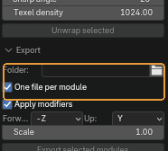
Папка выгрузки и способ раскладки: файл на модуль или всё выделенное в один файл.
Когда пригодится. Движку обычно нужен файл на модуль — так имя файла совпадает с именем ассета.
По умолчанию: файл на модуль; пустая папка означает export рядом с .blend
Настройки FBX¶
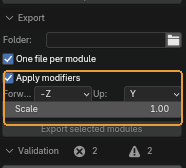
Оси, масштаб и вопрос, выгружать ли модификаторы применёнными.
По умолчанию: -Z вперёд, Y вверх, масштаб 1
Обратите внимание
Apply modifiers включён: живые стеки коллизий выгружаются посчитанными, иначе в движок уедет исходный меш вместо оболочки.
Export selected modules¶

Пишет выделенные модули вместе с их коллизиями в FBX.
Validation — проверка сцены¶
Прогон по модулям и коллизиям с отчётом, по которому можно ходить.
Validate scene¶
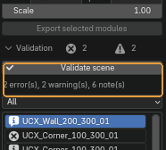
Прогоняет сцену по модулям и коллизиям и заполняет отчёт ниже.
Когда пригодится. Перед сдачей. Счётчики рядом показывают, сколько ошибок, предупреждений и замечаний найдено.
Фильтр отчёта¶

Какие находки показывать в списке.
По умолчанию: все
Список находок¶
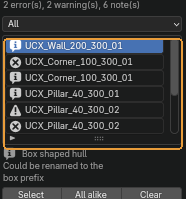
Строки отчёта: значок важности, объект и суть находки.
Когда пригодится. Клик по строке выделяет объект, о котором она.
Select, All alike, Clear¶

Выделить объект выбранной строки; выделить все объекты с такой же находкой; очистить отчёт.
Когда пригодится. All alike — способ чинить пачкой: одна и та же ошибка обычно повторяется по всему набору.
Export report¶
Записывает отчёт в JSON.
Когда пригодится. Когда результат проверки нужен за пределами Blender — приложить к задаче или прогнать сборкой.
Обратите внимание
Кнопки для него в панели нет. Оператор есть, но наружу не выведен: вызывается через поиск — F3 и «Export report».
Страница собрана из файла content/modular-environment-tools.ru.yml. Снимки сделаны в Modular Environment Tools 2.15.0.